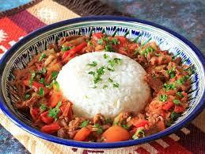

me
Ganfan recipe

Description
Ganfan is a dish eaten in Central-Asia originated mainly form uyghurs. I found it very close to my own taste. I hope you will like it
Ingridients
- rice
- beef or lamb
- balgarian pepper
- onion
- oil
- tomatoes
- potatoes
- garlic
- tomato paste
- pekin cabbage
- salt
Instructions
- preapare the rice wash the rice 3 times in cold water."150~200g of raw rice for one pesron"
- to boil the rice add the proportions of rice in grams and water equal. ex: 200 gram of rice add 200 ml of water and boil it until the water evoporates
- Wash all the vegetables and cut the onions into thin slices, cabbage potatoes and balgarian pepper cut into thin rectangles, and cut cut tomatoes into cubes
- Slice the meat into thin rectangles and then heat up the frying pan
- Stir fry the meat and onions then add potatoes and fry for 3 minute more
- Then add pepper,cabbage ,garlic, salt and tomatoes and fry and mix them
- Add 5 tbl spoons fo tomato paste mix everything. And then add a water soo that everything will be a liitle bit under the water and close it with a lid and led it boil for ~ 20 minutes in low-midium heat
- lastly put the rice into the dish and add the soup on top and enjoy your meal
Home